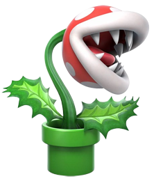

-
Mario
HP 970
Descrição
Personagem principal e protagonista da longa e bem-sucedida franquia Mario. Desde Super Mario Bros., suas habilidades de marcas tem sido o seu salto, com a qual a maioria de seus inimigos derrota; e sua capacidade de ganhar poderes com uma infinidade de itens, como o Super Mushroom, Fire Flower e Super Star.
-
Luigi
HP 690
Descrição
Irmão de Mario, Luigi é, normalmente, o personagem selecionado pelo “Jogador 2”. Em títulos recentes, o encanador de roupa verde se diferencia por ter o pulo mais alto entre todos os personagens.
-
Peach
HP 650
Descrição
Originalmente conhecida como Princesa Toadstool, a realeza do Reino dos Cogumelos recebeu seu atual nome com o passar dos anos. A personagem começou como uma donzela em perigo, mas, hoje, é jogável em diversos títulos da franquia Mario Bros., com seu poder especial de flutuar.
-
Bowser
HP 720
Descrição
Bowser é uma espécie de tartaruga dinossauro, sendo o principal vilão dos jogos da franquia Super Mario. Ele tem várias crianças — os Koopalings — que o ajudam em alguns jogos, como Larry, Morton, Roy, Lemmy, Iggy, Wendy e Ludwig. Bowser também tem uma frota de navios piratas voadores, um veículo de palhaço com hélices e uma horda interminável de “Koopa Troopas”, “Goombas” e muito mais.
-
Yoshi
HP 650
Descrição
Yoshi existe desde Super Mario World em 1990 e tornou-se conhecido pelos pés ligeiros e pela língua longa e flexível.
-
Planta piranha
HP 320
Descrição
Piranha Plant um inimigo parecido com uma armadilha venenosa, quase sempre retratado como um arbusto verde frondoso, coberto com uma cabeça vermelha manchada de branco, cortada por uma boca labial branca com dentes afiados. Normalmente escondem-se dentro de tubos (às vezes os canos que Mario pode entrar), e saem sempre que algo passa por perto. Algumas espécies também podem cuspir bolas de fogo, chamadas armadilhas de fogo de Vênus . Outros vivem inteiramente fora das tubulações, estando ou enraizados no chão ou até mesmo caminhando sobre as pernas como se fossem raízes. Quando Mario está parado em um cano, eles tendem a ficar no cano.
-
Toad
HP 600
Descrição
Todos os habitantes do Reino dos Cogumelos são conhecidos como Toad. Porém, um Toad se destacou dentre os demais. Essa criaturinha se tornou jogável nos games mais recentes de Mario, podendo utilizar super força para dizimar os inimigos. Os Toads costumam existir em diferentes cores, mas o Toad especial aparece sempre com um colete azul e manchas vermelhas na cabeça de cogumelo.
-
Kamek
HP 720

Descrição
O koopa mago é um dos servos mais poderosos de Bowser. Ele era originalmente chamado de "Magikoopa", mas recebeu um nome próprio. Ele pode, por exemplo, fazer uso de feitiços mágicos, teletransportar, duplicar, aumentar os poderes dos aliados e aumentar o tamanho das criaturas.
-
Quebra-ossos
HP 470
Descrição
Também conhecidos como Skeleton Koopa, são versões esqueléticas dos Koopa Troopas. Esses mortos-vivos vão se desmanchar quando atacados, mas reviverão logo, se tornando completamente normais outra vez. O único modo de derrotar um Dry Bones permanentemente é com uma Estrela ou com o Hammer Suit, já que são imunes aos golpes do Mario Guaxinim e a bolas de fogo. O primeiro Dry Bones da história apareceu na fortaleza do Mundo 1.
-
Boo
HP 820
Descrição
A primeira aparição dos fantasmas foi em Super Mario Bros. 3, e eram conhecidos como Boo Diddleys, em referência ao cantor e compositor Bo Diddley. Porém, nos jogos posteriores, passou a ser chamado somente de Boo. O traço mais marcante da personalidade dos fantasmas do reino dos cogumelos é sua timidez. Quando Mario olha no rosto de um Boo, ele fica vermelho e cobre seu rosto.